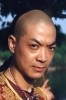

Also known as:Dang kou tan (original title)
Country:China, 97 minutes
Spoken languages:
Genres:Action
Director(s):Ng See-Yuen
Writer(s):Ng See-Yuen
Video Codec:Unknown
Number: 250


Certification:
Storyline:
Yuen Woo Ping, who would in time become one of the world's leading martial arts choreographers, blocked the fight scenes for this Kung Fu action extravaganza. A small Chinese town is being torn apart by a conflict between local farmers and Japanese soldiers of fortune, who have been brought to town to liberate supplies of a rare Chinese herb. A martial arts expert gifted in both Chinese and Japanese fighting disciplines passes through town, and takes it upon himself to settle the feud.
Cast: 


Medium: Original DVD,
Comments: Part of: The Martial Arts Essentials Volume 4 - The Films of Yuen Wo Ping Series Two & also w/ Moonlight Sword and Jade Lion
Loaned: No
Aspect ratio: Unknown